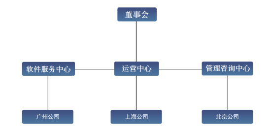
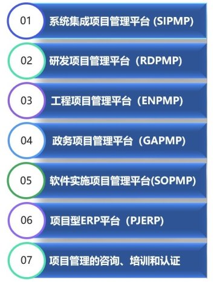
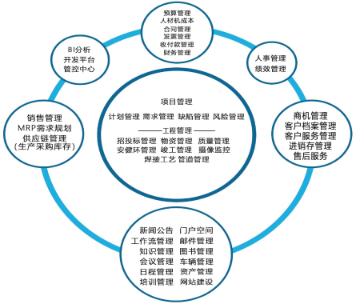
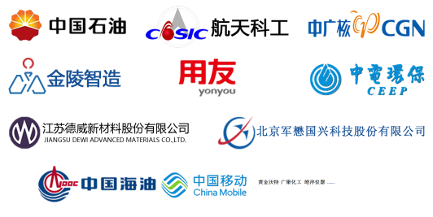

易用且全面的项目管理软件
泰顶拓鼎集团（TakeTop Group）成立于2010年，专门从事项目管理软件的开发、实施和管理咨询服务，为企业提供全方面的项目管理解决方案，经过多年的努力开拓，已经成长为一家极具市场竞争力的管理软件和咨询服务提供商。
集团拥有高素质的员工队伍，核心人员有在美国、德国专业大型企业的工作管理经验，具有专业、丰富的软件工程、编码、测试、维护、实施和管理咨询服务经验。
经过多年的努力，我们在十三大行业（工程设计与施工、工厂制造业、系统集成与实施、金融及投资行业、广告传媒、市场营销、研究所、管理咨询、律师事务所、会计事务所、软件开发、教育行业、国家行政机关）形成了成熟的解决方案。
系统集成项目管理平台、研发项目管理平台、工程项目管理平台、项目型ERP处于业界领先地位！


泰顶拓鼎软件所有管理平台一体化设计（统一架构，无需接口），功能强大，模块俱全，按需选取，易用且专业，纯网页B/S架构，维护简单，配APP，集成微信企业号和公众号，具有中英法俄意西日繁等10多种语言版本！


1、强大的技术开发实力和创新能力保障了系统稳定和持续性发展。
2、多年的企业项目管理领域经验保障项目实施的顺利成功。
3、诸多世界级企业和大型国有企业的选择证明了产品的可靠性。
1、完全基于用户使用习惯设计系统UI。
2、界面友好、简单，功能强大且易于上手。
3、支持多种行业的特点。
1、完善的产品安装包，大多数的配置均可在安装过程中完成。
2、极小的系统资源消耗。
3、智能帮助提示系统，大大减少用户使用培训的成本。
4、提供完善的售后服务保障体系。
1、无论您企业大小， 泰顶拓鼎均能提供适合的版本。
2、产品完全可以按照模块化组装发布，随需应变。
3、同时还提供多种应用工具以适应部署和实施的需要。
泰顶拓鼎所有软件平台为自有版权产品，拥有百分之百的知识产权，并依法拥有【泰顶】和【拓鼎】两大品牌商标。
|
|
|
|
|
|
泰顶拓鼎集团公司与产品介绍（视频）
https://www.taketopits.com/Download/TrainVideo/Sales/TakeTopCPVideo.mp4
网站：
地址：上海市浦东新区陆家嘴桃林路18号环球广场A座 电话：021-51085119 邮箱：service@taketopits.com
1 / 4